ハンズ渋谷店
旧・東急ハンズ渋谷店
48年間、ありがとう。
19782026.11.15
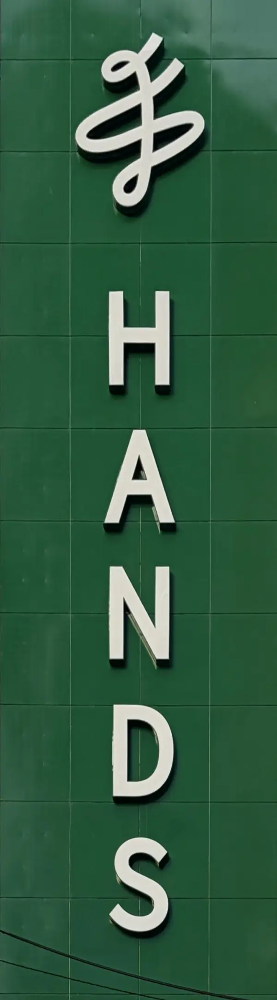
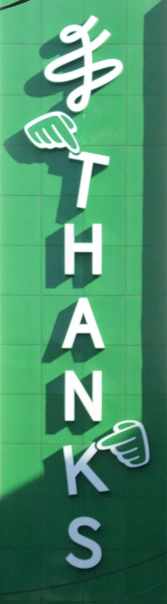
7A
まだ、
HANDSだった5月。
2026年5月。縦に5文字、HANDS。半年後に文字が増えるとは、看板もまだ知らない。
6B
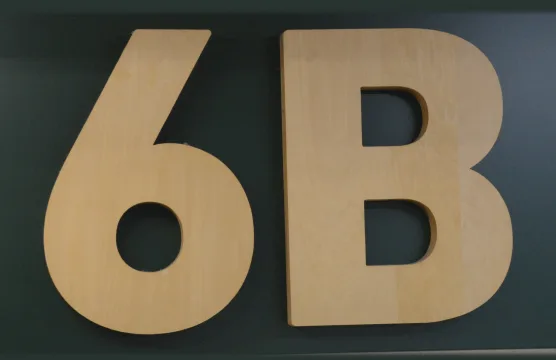
手が、
看板を書き換えた。
閉店を前に、看板に白い手があらわれた。上の手は T を差しこみ、下の手は D を K に変えている。HANDS は THANKS になった。
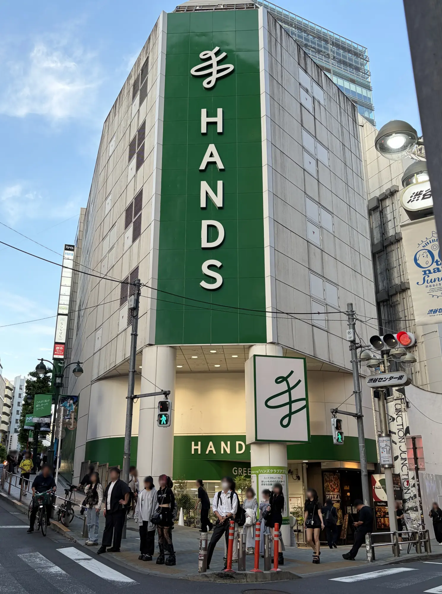
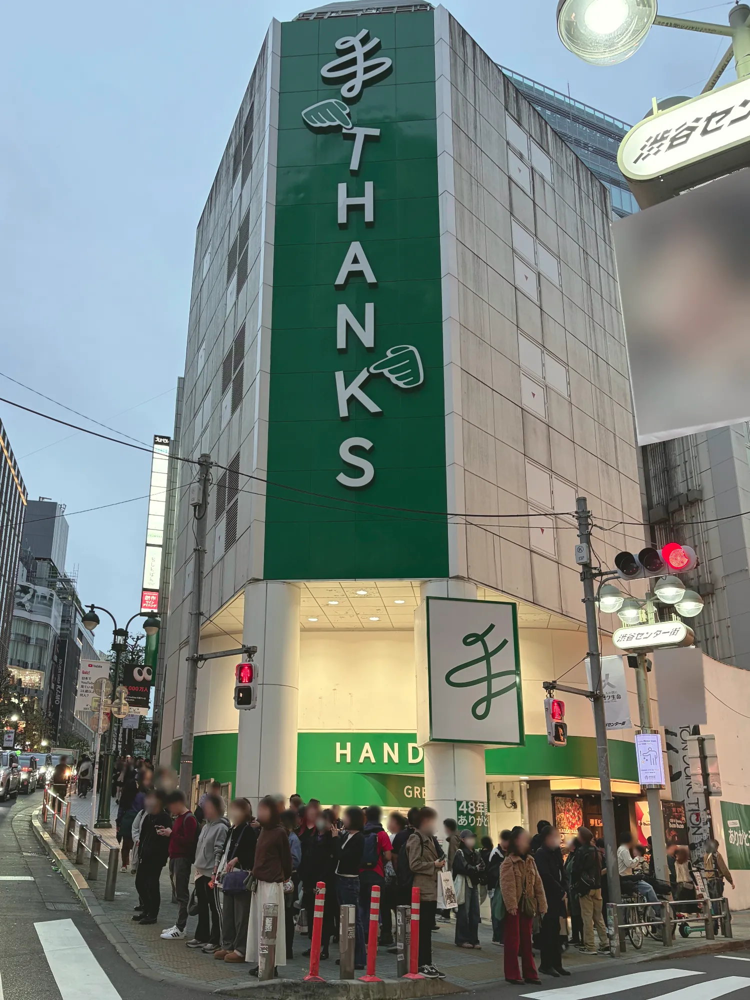
同じ角から、5月と11月。
交差点の同じ角から撮った2枚を重ねました。境目を左右に動かすと、5文字の HANDS が、6文字の THANKS に変わります。
Dは、まだそこにいる。
入口のひさしの THANKS をよく見ると、K の下に、元の D がうっすら透けて見える。ルーペを動かして探してみてください。
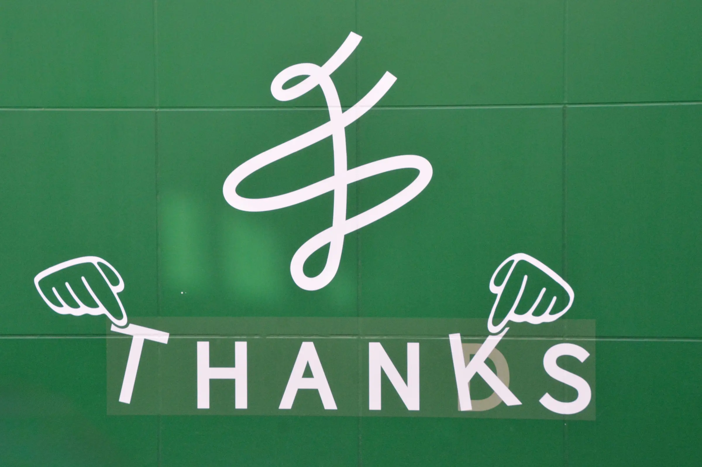
5C
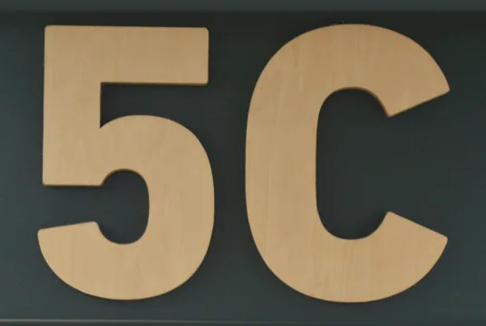
店の外から、
ありがとう。
「渋谷のランドマークとして、この街の文化を支えてくださいました」
4A
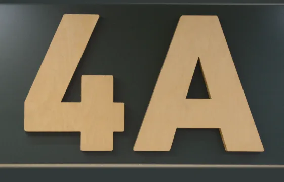
最後の売り場も、
色でいっぱい。
10月16日から11月15日まで「48年間、ありがとうセール」。棚の上には「おかげさまで50年」の札。
3B
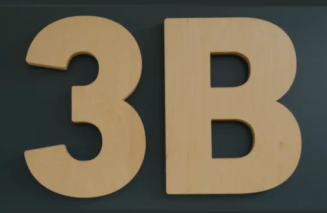
東急ハンズ
だったころ。
メモリアル展示に残っていた、昔のフロアガイド。半階ずつずれて重なる「スキップフロア」を、24のフロアとして案内していた。このページの章番号も、そこから借りています。
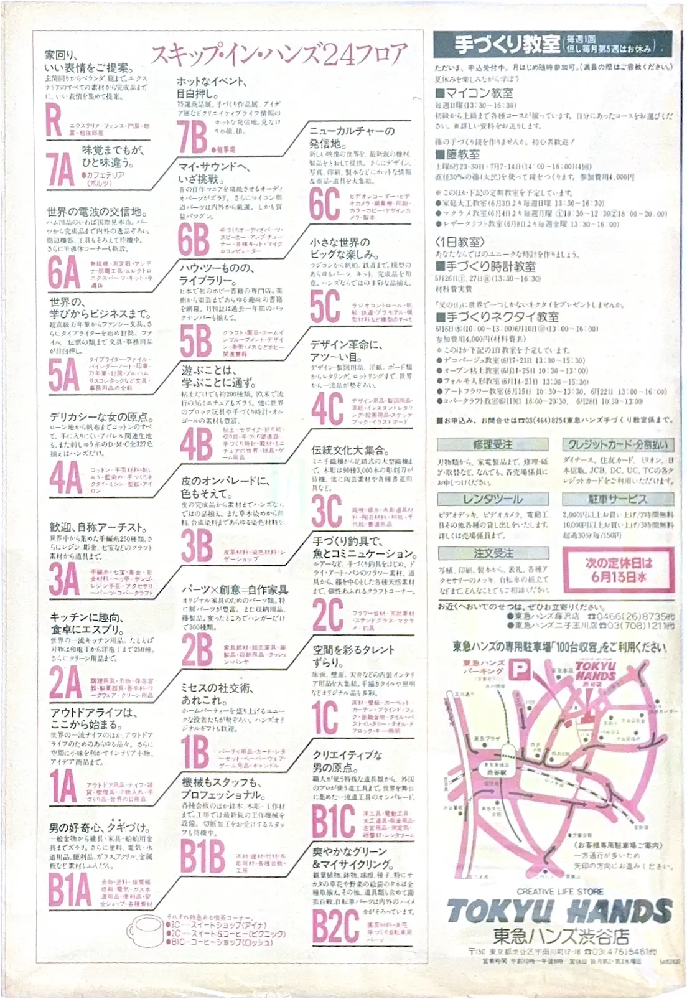
ルーペで拡大できます。
- R家回り、いい表情をご提案。
- 7A味覚までもが、ひと味違う。
- 6Bマイ・サウンドへ、いざ挑戦。
- 5Bハウ・ツーものの、ライブラリー。
- 4B遊ぶことは、学ぶことに通ず。
- 3A歓迎、自称アーチスト。
- B1B機械もスタッフも、プロフェッショナル。
- B2C爽やかなグリーン＆マイサイクリング。
B2C
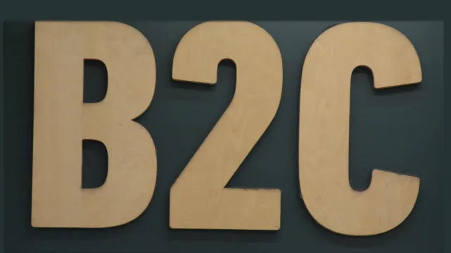
いちばん下の階に、
いちばん多くの言葉。
階段を降りてB2Cへ。そのさらに下にあるのが、B2の「Green」。通りからも直接入れる。入口のポスター、エレベーター前のメモリアル展示、その先に続く寄せ書きの壁。お客さんの思い出がカードになって、壁を埋めていた。
閉店まで
-日--時間--分--秒
2026年11月15日（日）19:00 閉店
THANKDS
48年間、ありがとうございました。
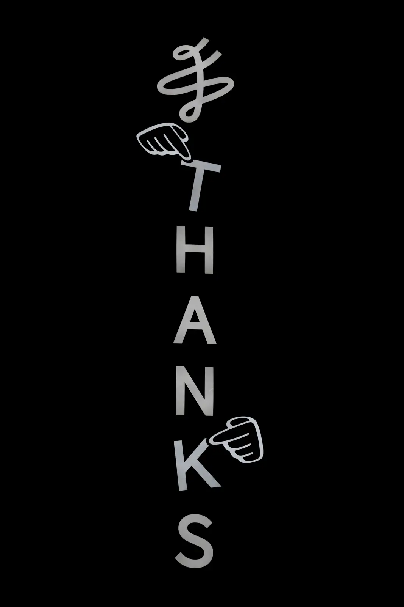